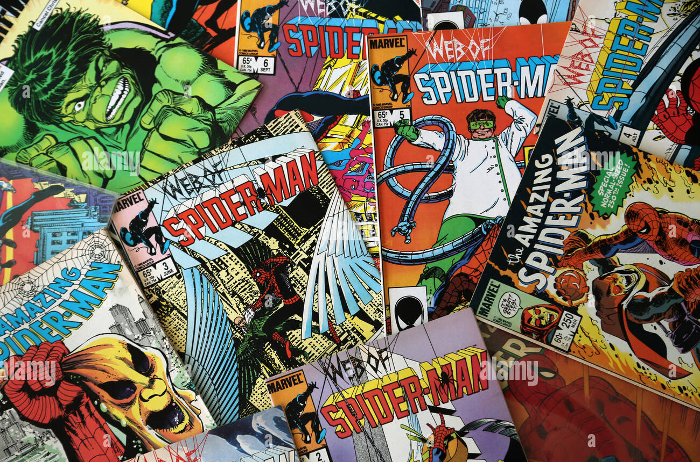

<div class="center">
<div class="column text-white">
  <h1>Sobre comics</h1>
  <p>
    El termino comic es utilizado para designar a aquellar formas de relato gráfico que se arman en base a dibujos encuadrados en viñetas. El origen de los comics se remonta a miles de años, desde que el ser humano tuvo la necesidad de dibujar para poder explicar una historia, aventura, acontecimiento o leyenda. Los cómics de superhéroes son uno de los géneros más comunes de los cómics estadounidenses . El género saltó a la fama en la década de 1930 y se hizo extremadamente popular en la década de 1940 y se ha mantenido como la forma dominante de cómic en América del Norte desde la década de 1960. Los cómics de superhéroes presentan historias sobre superhéroes y los universos en los que habitan estos personajes.
  </p>
<div class="center"></div>
  
</div>
</div>